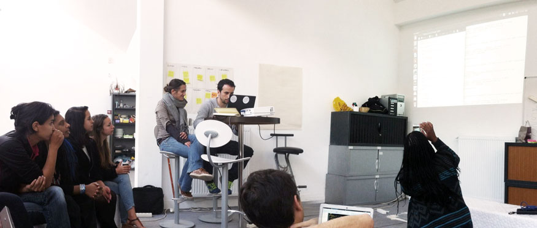

Profils de développeurs/ses
juniors à recruter

Nous sommes arrivé à la fin de la formation Développement d'applications web de Simplon.co. Des étudiants - aux profils très variés - ont pendant 6 mois exploré l'univers des développeurs. Ils sont maintenant disponibles et recherchent maintenant un poste ou une mission.
Nous avons mis en place des ateliers leur permettant d'apprendre la programmation, et surtout de comprendre les clefs du métier de développeur et les bonnes pratiques. Nous avons, pendant 6 mois :
- fait des katas et autres exercices de code
- réalisé des applications from scratch (en utilisant les frameworks : Rails, Django, Nodejs/Express, Ember.js)
- participé à des projets open source
- lu beaucoup de code
- pratiqué des méthodes agiles, dont le TDD
- fait une rétrospective hebdomadaire
- rédigé des cours et des exercices pour la formation ouverte à distance
Nous avons beaucoup utilisé Ruby qui, est un langage très sympa pour apprendre. Mais pour leur permettre de voir un peu d'autres façons de faire, nous avons aussi pratiqué Python et beaucoup de Javascript. Pour comprendre qu'il existe d'autres paradigmes, nous avons expérimenté avec Go, Haskell, C...
Je pense les avoir préparé à continuer à apprendre. Il leur faut maintenant trouver une belle équipe dans laquelle ils pourront s'épanouir, continuer à apprendre tout en partageant ce qu'ils savent déjà. Ils apporteront également une vision nouvelle, une façon de voir que l'on ne retrouve pas dans les grandes écoles d'informatique. Parce que certains ont déjà pratiqué d'autres activités professionnelles, ou tout simplement parce qu'ils n'ont pas été formatés pendant 3 ans...
Si vous souhaitez les rencontrer, n'hésitez pas à me faire signe. Je pourrai également vous faire parvenir quelques CVs.
Je suis Yannick François, leur formateur j. Si vous avez besoin de plus de détails sur la formation qu'ils ont suivi, n'hésitez pas à me contacter.